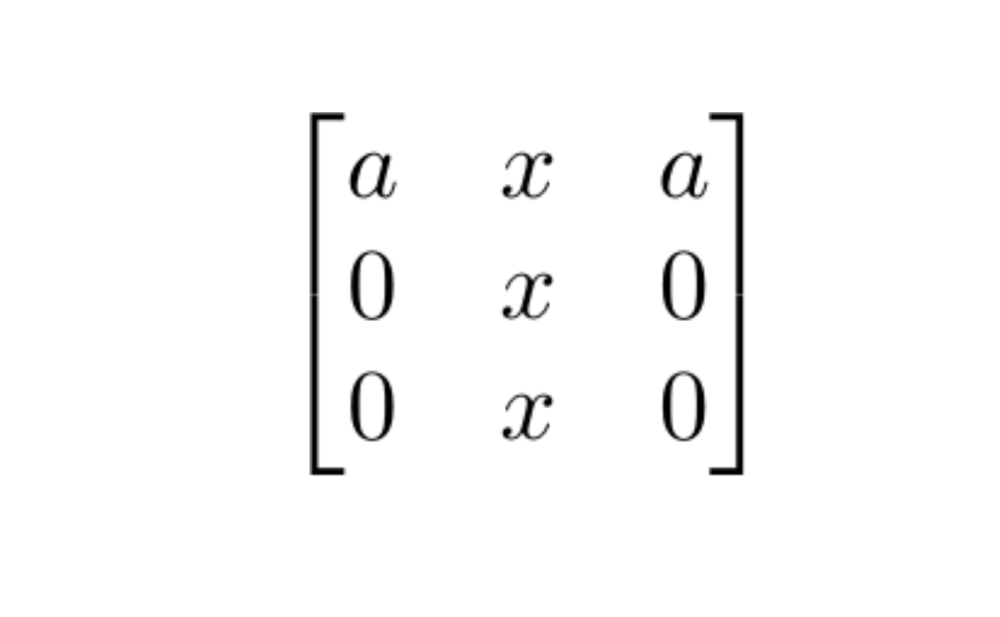
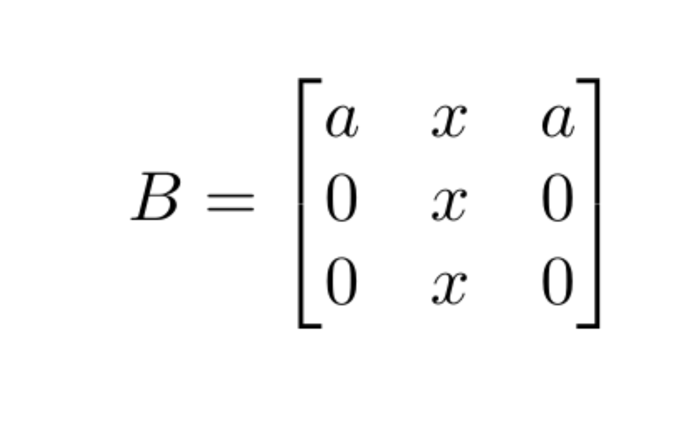

x <- symbol('x')
as.character(x)
#> [1] "x"
x
#> c: x
as_expr(x)
#> expression(x)
z <- cos(x)^2 + sin(x)^2
z
#> c: 2 2
#> sin (x) + cos (x)
simplify(z)
#> c: 1
tex(z)
#> [1] "\\sin^{2}{\\left(x \\right)} + \\cos^{2}{\\left(x \\right)}"
z <- cos(x)*cos(y) - sin(x)*sin(y)
z
#> c: -sin(x)⋅sin(y) + cos(x)⋅cos(y)
simplify(z)
#> c: cos(x + y)
z <- cos(x + y)
z
#> c: cos(x + y)
expand(z)
#> c: cos(x + y)
expand_trig(z)
#> c: -sin(x)⋅sin(y) + cos(x)⋅cos(y)
x <- symbol('x')
y <- symbol('y')
z <- log(x*y)
z
#> c: log(x⋅y)
expand_log(z)
#> c: log(x) + log(y)
x <- symbol("x")
int(1/x, x, 1, 10)
#> c: log(10)
i1 <- int(1/x, x, 1, 10, doit = FALSE)
i1
#> c: 10
#> ⌠
#> ⎮ 1
#> ⎮ ─ dx
#> ⎮ x
#> ⌡
#> 1
tex(i1)
#> [1] "\\int\\limits_{1}^{10} \\frac{1}{x}\\, dx"
doit(i1)
#> c: log(10)
int(1/x, x)
#> c: log(x)
i1 <- int(1/x, x, doit = FALSE)
i1
#> c: ⌠
#> ⎮ 1
#> ⎮ ─ dx
#> ⎮ x
#> ⌡
tex(i1)
#> [1] "\\int \\frac{1}{x}\\, dx"
doit(i1)
#> c: log(x)
x <- symbol("x")
lim(sin(x)/x, "x", 0)
#> c: 1
lim(1/x, "x", 0, dir = '+')
#> c: ∞
lim(1/x, "x", 0, dir = '-')
#> c: -∞We can also postpone evaluation:
Note that the function is called d() and not
deriv().
x <- symbol("x")
y <- symbol("y")
f <- 3*x^2 + x*y^2
f
#> c: 2 2
#> 3⋅x + x⋅y
as_expr(f)
#> expression(3 * x^2 + x * y^2)
der(f, "x")
#> c: 2
#> 6⋅x + y
der(f, x)
#> c: 2
#> 6⋅x + y
der(f, c("x", "y"))
#> c: ⎡ 2 ⎤
#> ⎣6⋅x + y 2⋅x⋅y⎦
der(f, list(x, y))
#> c: ⎡ 2 ⎤
#> ⎣6⋅x + y 2⋅x⋅y⎦
f1 <- der(f, list(x, y))
f1
#> c: ⎡ 2 ⎤
#> ⎣6⋅x + y 2⋅x⋅y⎦
as.character(f1)
#> [1] "[6*x + y^2, 2*x*y]"
as_expr(f1)
#> expression(cbind(6 * x + y^2, 2 * x * y))
eval(as_expr(f1), list(x = 1, y = 2))
#> [,1] [,2]
#> [1,] 10 4
der(f1, list(x, y))
#> c: ⎡ 6 2⋅y⎤
#> ⎢ ⎥
#> ⎣2⋅y 2⋅x⎦
f2 <- der2(f, list(x, y))
f2
#> c: ⎡ 6 2⋅y⎤
#> ⎢ ⎥
#> ⎣2⋅y 2⋅x⎦
as_expr(f2)
#> expression(matrix(c(6, 2 * y, 2 * y, 2 * x), nrow = 2))
eval(as_expr(f2), list(x = 1, y = 2))
#> [,1] [,2]
#> [1,] 6 4
#> [2,] 4 2
x <- symbol("x")
y <- symbol("y")
f <- eval_to_symbol("[3*x**2 + x*y**2, 2*x, 5*y]")
f
#> c: ⎡ 2 2 ⎤
#> ⎣3⋅x + x⋅y , 2⋅x, 5⋅y⎦
der(f, list(x, y))
#> c: ⎡ 2 ⎤
#> ⎢6⋅x + y 2 0⎥
#> ⎢ ⎥
#> ⎣ 2⋅x⋅y 0 5⎦
A <- matrix(c("x", 0, 0, "2*x"), 2, 2)
A
#> [,1] [,2]
#> [1,] "x" "0"
#> [2,] "0" "2*x"
B <- as_sym(A)
B
#> c: ⎡x 0 ⎤
#> ⎢ ⎥
#> ⎣0 2⋅x⎦
2*B
#> c: ⎡2⋅x 0 ⎤
#> ⎢ ⎥
#> ⎣ 0 4⋅x⎦
B*B # Component-wise / Hadamard product
#> c: ⎡ 2 ⎤
#> ⎢x 0 ⎥
#> ⎢ ⎥
#> ⎢ 2⎥
#> ⎣0 4⋅x ⎦
dim(B)
#> [1] 2 2
sqrt(B)
#> c: ⎡√x 0 ⎤
#> ⎢ ⎥
#> ⎣0 √2⋅√x⎦
log(B)
#> c: ⎡log(x) zoo ⎤
#> ⎢ ⎥
#> ⎣ zoo log(2⋅x)⎦
sum(B)
#> c: 3⋅x
B %*% t(B)
#> c: ⎡ 2 ⎤
#> ⎢x 0 ⎥
#> ⎢ ⎥
#> ⎢ 2⎥
#> ⎣0 4⋅x ⎦
diag(B)
#> c: [x 2⋅x]
cbind(B, B)
#> c: ⎡x 0 x 0 ⎤
#> ⎢ ⎥
#> ⎣0 2⋅x 0 2⋅x⎦
rbind(B, B)
#> c: ⎡x 0 ⎤
#> ⎢ ⎥
#> ⎢0 2⋅x⎥
#> ⎢ ⎥
#> ⎢x 0 ⎥
#> ⎢ ⎥
#> ⎣0 2⋅x⎦
det(B)
#> c: 2
#> 2⋅x
QRdecomposition(B)
#> $Q
#> c: ⎡ x ⎤
#> ⎢─── 0 ⎥
#> ⎢│x│ ⎥
#> ⎢ ⎥
#> ⎢ x ⎥
#> ⎢ 0 ───⎥
#> ⎣ │x│⎦
#>
#> $R
#> c: ⎡│x│ 0 ⎤
#> ⎢ ⎥
#> ⎣ 0 2⋅│x│⎦
A <- matrix(c("a", 0, 0, 0, "a", "a", "a", 0, 0), 3, 3)
B <- as_sym(A)
eigenval(B)
#> [[1]]
#> [[1]]$eigval
#> c: a
#>
#> [[1]]$eigmult
#> [1] 2
#>
#>
#> [[2]]
#> [[2]]$eigval
#> c: 0
#>
#> [[2]]$eigmult
#> [1] 1
eigenvec(B)
#> [[1]]
#> [[1]]$eigval
#> c: 0
#>
#> [[1]]$eigmult
#> [1] 1
#>
#> [[1]]$eigvec
#> c: [-1 0 1]ᵀ
#>
#>
#> [[2]]
#> [[2]]$eigval
#> c: a
#>
#> [[2]]$eigmult
#> [1] 2
#>
#> [[2]]$eigvec
#> c: [1 0 0]ᵀ
eigen(eval(as_expr(B), list(a = 2)))
#> eigen() decomposition
#> $values
#> [1] 2 2 0
#>
#> $vectors
#> [,1] [,2] [,3]
#> [1,] 1 -1.000000e+00 -0.7071068
#> [2,] 0 2.220446e-16 0.0000000
#> [3,] 0 2.220446e-16 0.7071068inv() /
solve_lin()
solve_sys()
Below find an example with maximising the multinomial likelihood.
p <- as_sym(paste0("p", 1:3))
y <- as_sym(paste0("y", 1:3))
a <- as_sym("a")
l <- sum(y*log(p))
l
#> c: y₁⋅log(p₁) + y₂⋅log(p₂) + y₃⋅log(p₃)
L <- -l + a*(sum(p) - 1)
L
#> c: a⋅(p₁ + p₂ + p₃ - 1) - y₁⋅log(p₁) - y₂⋅log(p₂) - y₃⋅log(p₃)
tex(L)
#> [1] "a \\left(p_{1} + p_{2} + p_{3} - 1\\right) - y_{1} \\log{\\left(p_{1} \\right)} - y_{2} \\log{\\left(p_{2} \\right)} - y_{3} \\log{\\left(p_{3} \\right)}"
g <- der(L, list(p, a))
g
#> c: ⎡ y₁ y₂ y₃ ⎤
#> ⎢a - ── a - ── a - ── p₁ + p₂ + p₃ - 1⎥
#> ⎣ p₁ p₂ p₃ ⎦
sol <- solve_sys(g, list(p, a))
sol
#> Solution 1:
#> a = y₁ + y₂ + y₃
#> p1 = y₁
#> ────────────
#> y₁ + y₂ + y₃
#> p2 = y₂
#> ────────────
#> y₁ + y₂ + y₃
#> p3 = y₃
#> ────────────
#> y₁ + y₂ + y₃
sol[[1L]]$p1
#> c: y₁
#> ────────────
#> y₁ + y₂ + y₃
tex(sol[[1L]]$p1)
#> [1] "\\frac{y_{1}}{y_{1} + y_{2} + y_{3}}"
p <- as_sym(paste0("p", 1:3))
y <- as_sym(paste0("y", 1:3))
a <- as_sym("a")
l <- sum(y*log(p))
L <- -l + a*(sum(p) - 1)
g <- der(L, c(a, p))
sols <- solve_sys(g, list(a, p))
sol <- sols[[1L]]
sol
#> $a
#> c: -y₁
#> ───────────
#> p₂ + p₃ - 1
#>
#> $p1
#> c: -p₂ - p₃ + 1
H <- der2(L, list(p, a))
H
#> c: ⎡ y₁ ⎤
#> ⎢─── 0 0 1⎥
#> ⎢ 2 ⎥
#> ⎢p₁ ⎥
#> ⎢ ⎥
#> ⎢ y₂ ⎥
#> ⎢ 0 ─── 0 1⎥
#> ⎢ 2 ⎥
#> ⎢ p₂ ⎥
#> ⎢ ⎥
#> ⎢ y₃ ⎥
#> ⎢ 0 0 ─── 1⎥
#> ⎢ 2 ⎥
#> ⎢ p₃ ⎥
#> ⎢ ⎥
#> ⎣ 1 1 1 0⎦
H_sol <- subs(H, sol)
H_sol
#> c: ⎡ y₁ ⎤
#> ⎢─────────────── 0 0 1⎥
#> ⎢ 2 ⎥
#> ⎢(-p₂ - p₃ + 1) ⎥
#> ⎢ ⎥
#> ⎢ y₂ ⎥
#> ⎢ 0 ─── 0 1⎥
#> ⎢ 2 ⎥
#> ⎢ p₂ ⎥
#> ⎢ ⎥
#> ⎢ y₃ ⎥
#> ⎢ 0 0 ─── 1⎥
#> ⎢ 2 ⎥
#> ⎢ p₃ ⎥
#> ⎢ ⎥
#> ⎣ 1 1 1 0⎦
texshow(B)plots the following in the plot window:
texshow(B)
You can also provide a string instead:
giving

SymPy directly
sympy <- get_sympy()
sympy$diff("2*a*x", "x")
#> 2*a
sympy$solve("x**2 - 1", "x")
#> [[1]]
#> -1
#>
#> [[2]]
#> 1Below we give a brief example of assumptions. First consider the Cholesky decomposition of a matrix:
do_la(A, "cholesky")
#> Error in eval(expr, envir, enclos): ValueError: Matrix must be Hermitian.This fails as A is not positive (semi-)definite.
To ensure this, we need to impose restrictions on x.
This is done by defining a symbol with an assumption about
positivity:
y <- symbol("y", positive = TRUE)We continue and define B, where it is important that
declare_symbols = FALSE or else a new y will
automatically be defined by caracas overwriting the above
definition:
B <- as_sym("[[y + 1, 1], [1, 1]]", declare_symbols = FALSE)
B
#> c: ⎡y + 1 1⎤
#> ⎢ ⎥
#> ⎣ 1 1⎦
do_la(B, "cholesky")
#> c: ⎡ _______ ⎤
#> ⎢╲╱ y + 1 0 ⎥
#> ⎢ ⎥
#> ⎢ ___________⎥
#> ⎢ 1 ╱ 1 ⎥
#> ⎢───────── ╱ 1 - ───── ⎥
#> ⎢ _______ ╲╱ y + 1 ⎥
#> ⎣╲╱ y + 1 ⎦It is possible to ask for properties (see https://docs.sympy.org/latest/modules/assumptions/ask.html):
# Multinomial likelihood
p <- as_sym(paste0("p", 1:3))
y <- as_sym(paste0("y", 1:3))
a <- as_sym("a")
l <- sum(y*log(p))
L <- -l + a*(sum(p) - 1)
L
#> c: a⋅(p₁ + p₂ + p₃ - 1) - y₁⋅log(p₁) - y₂⋅log(p₂) - y₃⋅log(p₃)
print(L, ascii = TRUE)
#> c: a⋅(p₁ + p₂ + p₃ - 1) - y₁⋅log(p₁) - y₂⋅log(p₂) - y₃⋅log(p₃)
g <- der(L, list(p, a))
sol <- solve_sys(g, list(p, a))
sol
#> Solution 1:
#> a = y₁ + y₂ + y₃
#> p1 = y₁
#> ────────────
#> y₁ + y₂ + y₃
#> p2 = y₂
#> ────────────
#> y₁ + y₂ + y₃
#> p3 = y₃
#> ────────────
#> y₁ + y₂ + y₃
print(sol, simplify = FALSE)
#> [[1]]
#> [[1]]$a
#> c: y₁ + y₂ + y₃
#>
#> [[1]]$p1
#> c: y₁
#> ────────────
#> y₁ + y₂ + y₃
#>
#> [[1]]$p2
#> c: y₂
#> ────────────
#> y₁ + y₂ + y₃
#>
#> [[1]]$p3
#> c: y₃
#> ────────────
#> y₁ + y₂ + y₃
as.character(g)
#> [1] "[a - y1/p1, a - y2/p2, a - y3/p3, p1 + p2 + p3 - 1]"
as_character_matrix(g)
#> [,1] [,2] [,3] [,4]
#> [1,] "a - y1/p1" " a - y2/p2" " a - y3/p3" " p1 + p2 + p3 - 1"The following options are available:
caracas.print.method (utf8 is default,
others are: prettyascii and ascii)caracas.print.rowveccaracas.print.sol.simplify
sol
#> Solution 1:
#> a = y₁ + y₂ + y₃
#> p1 = y₁
#> ────────────
#> y₁ + y₂ + y₃
#> p2 = y₂
#> ────────────
#> y₁ + y₂ + y₃
#> p3 = y₃
#> ────────────
#> y₁ + y₂ + y₃
L
#> c: a⋅(p₁ + p₂ + p₃ - 1) - y₁⋅log(p₁) - y₂⋅log(p₂) - y₃⋅log(p₃)
options(caracas.print.method = "prettyascii")
sol
#> Solution 1:
#> a = y1 + y2 + y3
#> p1 = y1
#> ------------
#> y1 + y2 + y3
#> p2 = y2
#> ------------
#> y1 + y2 + y3
#> p3 = y3
#> ------------
#> y1 + y2 + y3
L
#> c: a*(p1 + p2 + p3 - 1) - y1*log(p1) - y2*log(p2) - y3*log(p3)
options(caracas.print.method = "ascii")
sol
#> Solution 1:
#> a = y1 + y2 + y3
#> p1 = y1/(y1 + y2 + y3)
#> p2 = y2/(y1 + y2 + y3)
#> p3 = y3/(y1 + y2 + y3)
L
#> c: a*(p1 + p2 + p3 - 1) - y1*log(p1) - y2*log(p2) - y3*log(p3)
options(caracas.print.method = NULL) # Or 'utf8'
sol
#> Solution 1:
#> a = y₁ + y₂ + y₃
#> p1 = y₁
#> ────────────
#> y₁ + y₂ + y₃
#> p2 = y₂
#> ────────────
#> y₁ + y₂ + y₃
#> p3 = y₃
#> ────────────
#> y₁ + y₂ + y₃
L
#> c: a⋅(p₁ + p₂ + p₃ - 1) - y₁⋅log(p₁) - y₂⋅log(p₂) - y₃⋅log(p₃)
p
#> c: [p₁ p₂ p₃]ᵀ
options(caracas.print.rowvec = FALSE)
p
#> c: ⎡p₁⎤
#> ⎢ ⎥
#> ⎢p₂⎥
#> ⎢ ⎥
#> ⎣p₃⎦
options(caracas.print.rowvec = NULL) # reset to default (TRUE)
sol
#> Solution 1:
#> a = y₁ + y₂ + y₃
#> p1 = y₁
#> ────────────
#> y₁ + y₂ + y₃
#> p2 = y₂
#> ────────────
#> y₁ + y₂ + y₃
#> p3 = y₃
#> ────────────
#> y₁ + y₂ + y₃
options(caracas.print.sol.simplify = FALSE)
sol
#> [[1]]
#> [[1]]$a
#> c: y₁ + y₂ + y₃
#>
#> [[1]]$p1
#> c: y₁
#> ────────────
#> y₁ + y₂ + y₃
#>
#> [[1]]$p2
#> c: y₂
#> ────────────
#> y₁ + y₂ + y₃
#>
#> [[1]]$p3
#> c: y₃
#> ────────────
#> y₁ + y₂ + y₃
options(caracas.print.sol.simplify = NULL) # reset to default (TRUE)